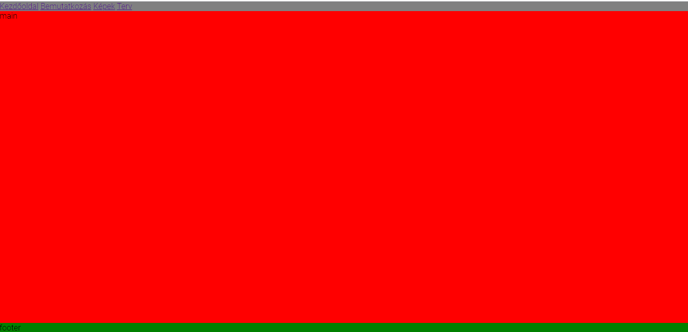
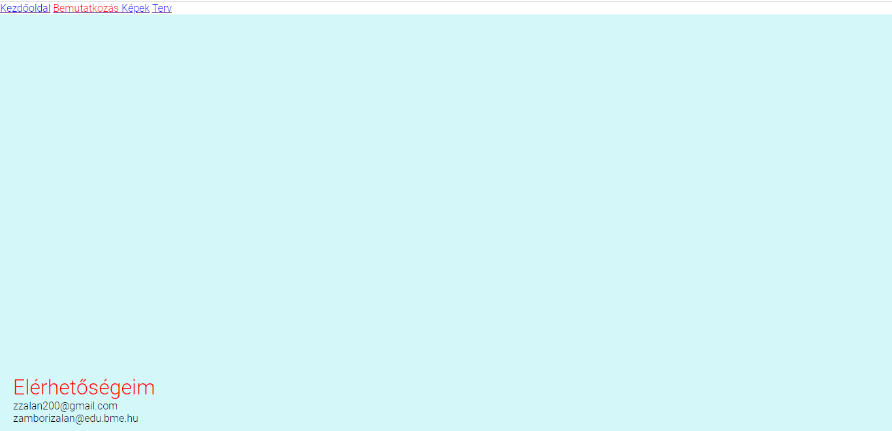

az első háromnál a vázlat készítés könnyű volt, a képesnél nem nagyon tudtam rendes mennyiségű épet összeszedni, továbbá a legnagyobb nehézsé a képek igazítása volt, mert akárhogy próbálkoztam nem tudtam rendesen egymás mellé helyezni őket, pedig próbálltam az órán tanultakkal és akét külön (bal és jobb) csoportba osztással, de valahol valamit nagy eséllyel elgépetem, vagy rosszul írtam, mert a képek nem akartak reagálni.